Effects
This menu contains many commands that can be used for applying special effects to your image.
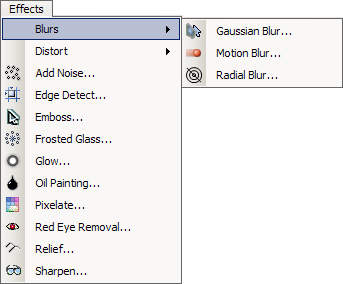
The Distort submenu provides 4 effects not shown in the above screenshot:
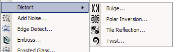
The following image will be used to show what each effect (except for Red Eye Removal) is capable of:
-
Repeat [effect name]
If you have run an effect before, you may use this command to run it again with the same settings.
-
Blurs → Gaussian Blur
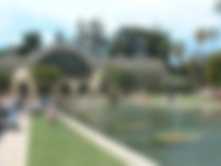
-
Blurs → Motion Blur
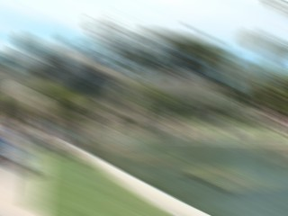
-
Blurs → Radial Blur
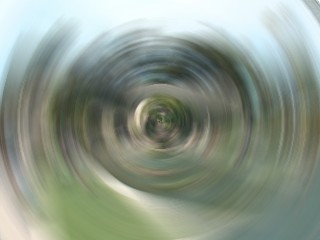
-
Distort → Bulge
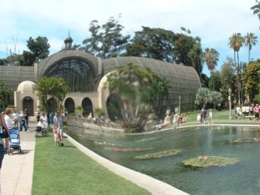
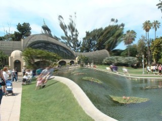
-
Distort → Polar Inversion
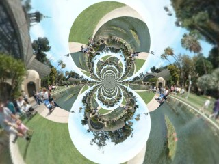
-
Distort → Tile Reflection
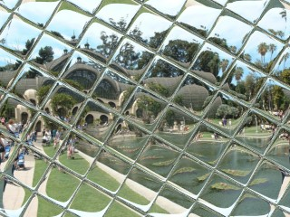
-
Distort → Twist
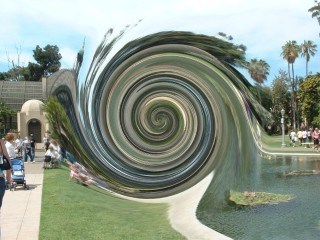
-
Add Noise
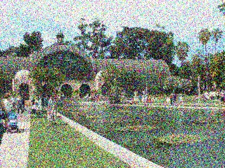
-
Edge Detect
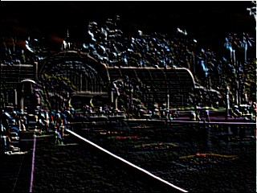
-
Emboss
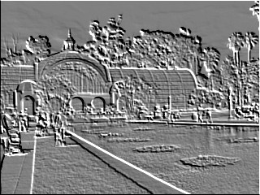
-
Frosted Glass
-
Glow
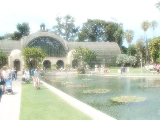
-
Oil Painting
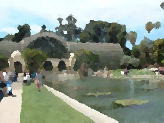
-
Pixelate
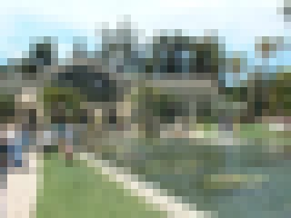
-
Red Eye Removal
This can be used to correct for red eye in digital photographs. This removal operation works best when you use a selection tool to limit the effect's calculations to just the subject's eyes, as shown in the sequence of images below.

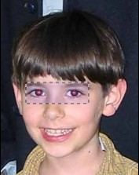
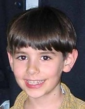
1. Before
2. Eyes selected
3. After
-
Relief
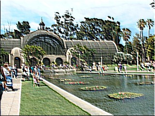
-
Sharpen
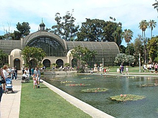
Copyright © 2006
Rick Brewster, Tom
Jackson, and past contributors. Portions Copyright
© 2006 Microsoft Corporation. All Rights Reserved.